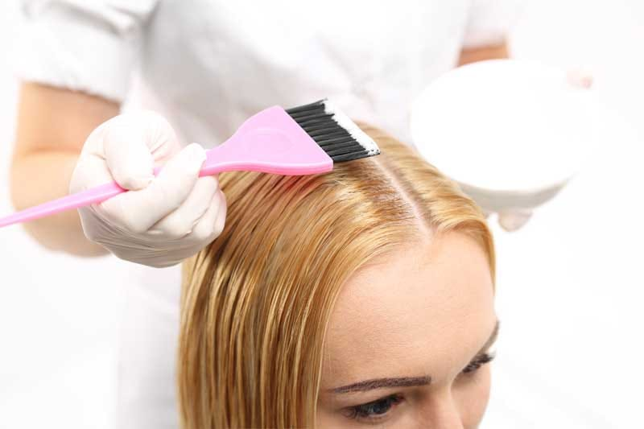

Mechas
Si quieres dar un cambio de color a tu cabello las mechas babylights son una buena forma de hacerlo. Se trata de dar pequeños reflejos de luz por todo el pelo que consigan un tono más claro y luminoso de una forma muy sutil y natural.
Si quieres dar un cambio de color a tu cabello las mechas babylights son una buena forma de hacerlo. Se trata de dar pequeños reflejos de luz por todo el pelo que consigan un tono más claro y luminoso de una forma muy sutil y natural.

Llamamos color global a un cambio total del cabello, si lo que deseas es un cambio al 100% en la totalidad de tu pelo es lo que necesitas, aquí te recomendaremos lo mejor con tu tonalidad de piel, tu colorimetría y tú estilo, te acompañaremos a dar tu cambio estético.
Pueden ser globales o mechas, llamamos colores fantasía a aquellos que no existen (de manera natural) en el espectro de colores de cabello; como, por ejemplo, el azul, el rosa, el magenta, el lila, etc. Son tonalidades súper cancheras para animarse a algo distinto y lindo.